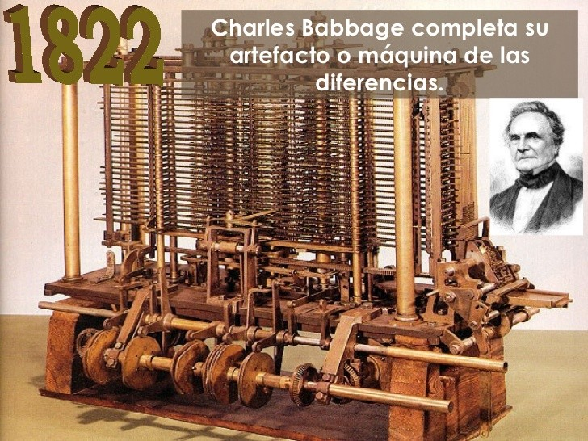
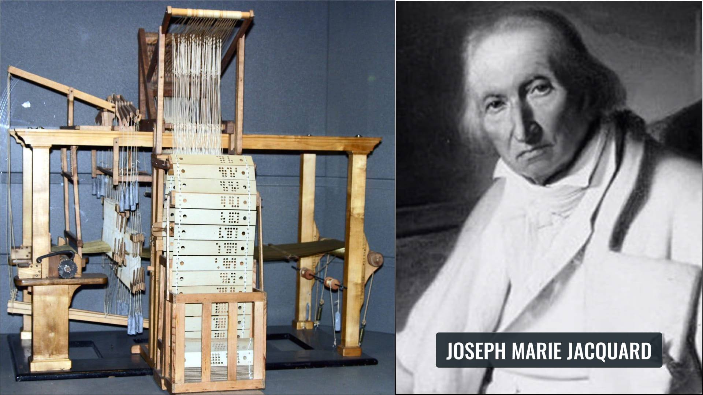

La historia de la programación es fascinante y se remonta a los años 1800. Te presento un resumen de su evolución:
El primer sistema de programación fue inventado por Joseph Marie Jacquard. Se trataba de un programa introducido en un telar que leía el código y permitía tejer unas figuras determinadas.
Imagenes referenciales  Charles Babbage creó la máquina diferencial, capaz de resolver no solo sumas y restas, sino también ecuaciones.
John W. Backus creó FORTRAN, el primer lenguaje de programación conocido que tenía como fin realizar cálculos numéricos y científicos de manera eficiente.
Apareció BASIC, una herramienta de apoyo enfocada a la educación que continúa utilizándose hoy en día en algunas herramientas.
Surgieron varios lenguajes de programación importantes como Pascal, un lenguaje de programación que surgió para enseñar a los alumnos y que se sigue utilizando hoy en día, y los lenguajes C y C++.
Con la aparición de internet, surgieron numerosos lenguajes de programación como HTML, Python, Java, entre otros. Los lenguajes de programación nacidos en esta década continúan utilizándose en la actualidad.